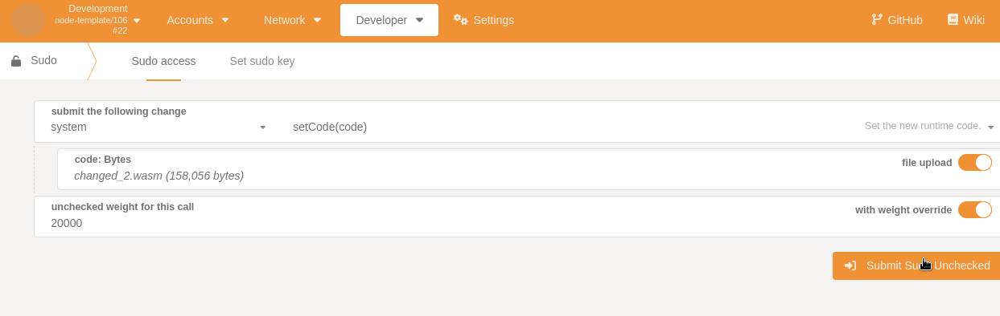

Introduction
Uptest(cli client) and Libuptest(core library) was created in order to make debugging of substrate based Runtime Upgrades easier.
Uptest contains several useful features and modules that helps developers detect changes that took place before and after the runtime upgrade was pushed.
Useful links:
Uptest github
https://github.com/apopiak/substrate-migrations
Runtime migration issues for substrate
doc.rs for Libuptest
Contribute:
If you want to modify or contribute to this documentation, you can do so by submitting a pull request to:
https://github.com/uptest-sc/uptest-sc.github.io
Install and utilize Uptest:
Libuptest can be found at crates.io and github:
$ cargo new --bin try_uptest
$ cd try_uptest/
$ cat rust-toolchain
[toolchain]
channel = "nightly-2023-04-24"
targets = ["wasm32-unknown-unknown"]
profile = "default"
host = "x86_64-unknown-linux-gnu"
$ cat Cargo.toml
[package]
name = "uptest-cli"
version = "0.1.0"
edition = "2021"
[dependencies]
libuptest = "0.1.1"
Note: Libuptest is currently only avaliable in the nightly edition, so you need to configure your rust-toolchain for that.
Libuptest feature flags
We wanted to make uptest a minimal and stand-alone library so Libuptest comes with multiple feature flags that you can enable:
metadatadecode
This feature flag is used for adding extrinsic decoding functionality to uptest. By enabling this flag you unlock the following functions:
unctions with metadatadecode flag:
https://github.com/search?q=repo%3Auptest-sc%2Fuptest%20%23%5Bcfg(feature%20%3D%20%22metadatadecode%22)%5D&type=code"
Subxt:
Feature flag not yet published.
ALL
The "ALL" feature flag does exactly what the name entails. It enables all avaliable feature flags.
All current feature flags on doc.rs
Limitations of uptest:
- Currently only supports metadata version 14 format
- Is running nightly rust and contains several unwrap's
Libuptest JsonRPCClient
Uptest use a modified version of Jsonrpsee from parity to connect to a chain.
This makes uptest compatible with standard JsonRpsee syntax.
Connect to chain:
#![allow(unused)] fn main() { use libuptest::jsonrpseeclient::JsonrpseeClient; let custom_client: JsonrpseeClient = JsonrpseeClient::new("ws://my_node.local:9944"); }
Default endpoints to chains
Out of the box 5 pre-configured endpoints have been added:
#![allow(unused)] fn main() { // connect to ws://127.0.0.1:9944 let local_client: JsonrpseeClient = JsonrpseeClient::with_default_url(); // connect to wss://edgeware.jelliedowl.net:443 let edgeware_client: JsonrpseeClient = JsonrpseeClient::edgeware_default_url(); // connect to wss://polkadot-rpc-tn.dwellir.com:443 let polkadot_client: JsonrpseeClient = JsonrpseeClient::polkadot_default_url(); // connect to wss://kusama-rpc-tn.dwellir.com:443 let kusama_client: JsonrpseeClient = JsonrpseeClient::kusama_default_url(); // connect to wss://ws.mof.sora.org:443 let sora_client: JsonrpseeClient = JsonrpseeClient::sora_default_url(); }
Subscribe to chain
#![allow(unused)] fn main() { use libuptest::jsonrpseeclient::subscription::{HandleSubscription, Request}; use libuptest::jsonrpseeclient::subscription::Subscribe; ... /// create a subscription socket to chain_subscribeFinalizedHeads println!("Subscribing to latest finalized blocks"); let mut subscrib: SubscriptionWrapper<Header> = client .clone() .subscribe::<Header>( "chain_subscribeFinalizedHeads", RpcParams::new(), "chain_unsubscribeFinalizedHeads", )?; for _ in 0..3 { // loop let tmp_client = JsonrpseeClient::polkadot_default_url().unwrap(); let nextone = subscrib.next();// get the next Finalized block number let blocknr = nextone.unwrap().unwrap().number; println!("Latest finalized block: {:?}", blocknr); let blockhash: H256 = blocknumber_to_blockhash(tmp_client.clone(), blocknr.clone()) // convert blocknr to blockhash with libuptest .await?; } // unsubscribe let _ = subscrib.unsubscribe(); Ok(()) }
Libuptest types
Libuptest comes prepackaged with several different types that will make debugging a bit easier.
Name:
H256
Description:
A H256 hash from fixed-hash, used as default blockhash.
Manually set a block hash:
#![allow(unused)] fn main() { let blockhash: H256 = H256::from_str("0x89a5dde6705d345117f442dfacf02f4a59bf5cea3ab713a5c07fc4cd78be3a31").unwrap();//get_latest_finalized_head(client.clone()).await.unwrap(); }
Used in code examples:
detect_runtime_upgrade
get_block_event
Name:
Header struct
Description:
Block Header containing the block nr
Used in code examples:
Define a block header standard that subscribe to finalized heads returns:
get_block_events
Name:
event_summary struct
Description:
event_summary is an easy high level way for developers to define a custom event.
Create a generic event in the form of:
#![allow(unused)] fn main() { let myevent: event_summary = event_summary { pub pallet_name: "Sudo".to_string(), pub pallet_method: "secret_function".to_string(), } }
Used in code examples:
decode_extrinsics
get_block_events
schedule_check
upgrade_change_diff
Name:
storage_types
Description:
enum for defining what type of storage entry it is, is it a StorageValue, StorageMap or Unknown type?
Used in code examples:
pallet_storage_parse module
Name: Block struct
Description:
Generic substrate sp-runtime block containing header and extrinsics.
Used in code examples:
Name: PreBlock struct
Description: A pre-block containing a block and justifications.
Used in code examples:
block_events
detect_runtime_upgrade
Name:
generic_block
Description:
A generic block format containing a Header and a Vector of strings.
Used in code examples:
Name:
RuntimeVersionEvent
Description:
Runtime Version Event struct containing a spec version number(u32).
Used in code examples:
Name: RuntimeEvent
Description:
Runtime event, returning a RuntimeVersionEvent if it has a value, if not it returns an error
Used in code examples:
Name:
storage_map_info struct
Description:
#![allow(unused)] fn main() { pub pallet_name: String, pub storage_item_name: String, // name of storagemap pub type_id: u32, // take the type id and query the type_id to type function pub raw_type: desub_current::scale_info::TypeDef<PortableForm>, pub storage_type: storage_types, }
Used in code examples:
upgrade_change_diff
get_pallet_storagemaps_storagevalues
External links:
Libuptest docs.rs type documentation
Libuptest ws_mod helper
use libuptest::ws_mod is a collection of seperate functions that utilize the ws socket(Default port 9944) to talk directly to the chain and then render the results.
Name of Function:
event_watch
Function description:
The event_watch function subscribes to the latest finalized blocks, every time their is a new block(normally every 6 seconds), the function will look at the event's triggered in the block and match that against a user defined event. If it finds the event in a block it will return the H256 block hash of that block. Select how many blocks to wait for with the block_limit parameter.
inputs:
- client: JsonrpseeClient
- event: event_summary
- block_limit: u32
outputs:
- Result<H256, crate::error::Error>
Used in code example:
upgrade_change_diff
schedule_check
Special feature flag needed: Yes - feature = "metadatadecode")
Name of Function: get_runtime_version
Function description:
Queries the state.getRuntimeVersion endpoint in order to get the runtime version information.
inputs: client: JsonrpseeClient, outputs: RuntimeVersion Struct
Used in code example:
upgrade_change_diff
detect_runtime_upgrade
Special feature flag needed: No
Name of Function: get_decoded_extrinsics_from_blockhash
Function description: Takes in a blockhash as input and decodes the extriniscs into the nice human readable format with event_summary struct.
inputs:
- blockhash: H256,
- metadatablob: Vec
, - client: JsonrpseeClient,
outputs:
- Result<Vec<event_summary>
Used in code example:
Special feature flag needed: Yes - feature = "metadatadecode"
Name of Function:
get_block_events
Function description:
Return the PreBlock of the block from the block's hash.
inputs:
blockhash: H256,
client: JsonrpseeClient,
outputs: Result<PreBlock, crate::error::Error>
Used in code example:
Special feature flag needed: No
Name of Function: get_latest_finalized_head Function description: Get the latest finalized block and return it as a H256 hash.
inputs: client: JsonrpseeClient, outputs: Result<H256, crate::error::Error> Used in code example:
Special feature flag needed: No
Name of Function: get_metadata_version
Function description: Returns the metadata version(1-14)
inputs: client: JsonrpseeClient outputs: u8 Used in code example:
Special feature flag needed: No
Name of Function:
blockhash_to_block
Function description:
Convert a block_hash in H256 format to a Preblock
inputs: client: JsonrpseeClient, block_hash: H256,
outputs: Preblock
Used in code example:
Special feature flag needed: No
Name of Function: blocknumber_to_blockhash
Function description: Convert the block number to a block hash, function queries the chain's chain.getBlockHash endpoint.
inputs: client: JsonrpseeClient, block_nr: String,
outputs: Result<H256, crate::error::Error>
Used in code example:
Special feature flag needed: No
Name of Function: get_raw_metadata
Function description: The the chain's metadata in a raw format(Vector of u8's).
inputs: client: JsonrpseeClient,
outputs:
anyhow::Result<Vec
Special feature flag needed: No
Name of Function: get_metadata_version
Function description: get the metadata version of chain X
Function description:
inputs: client: JsonrpseeClient,
outputs: Result<u8, crate::error::Error>
Used in code example:
Special feature flag needed: No
Add your own custom rpc/ws functions:
#![allow(unused)] fn main() { libuptest/src/ws_mod.rs: #[maybe_async::maybe_async(?Send)] /// use maybe-async crate to make the async code a bit easier to work with pub async fn get_custom_thing( client: JsonrpseeClient, ) -> anyhow::Result<MYTYPE, crate::error::Error> { // replace MYTYPE with the output you wish to get let hex_data: String = client .request("chain_getFinalizedHead", RpcParams::new())// replace chain_getFinalizedHead with module_function, if an input is required, pass it along with rpc_params![input1, input2] instead of RpcParamns::new(), which returns an empty list .await?; let myoutput: MYTYPE = H256::from_str(&hex_data.as_str())?; // make sure your type matches with the response output, serde comes in very handy for building structs based on the returned json rpc response Ok(myoutput) } }
Libuptest Decoding Extrinsics
When we query the chain for data we will get the raw data as a response. In order to decode this to a human readable format we need to know the metadata version and decode the hex string together with the raw metadata.
The data is encoded in a format called SCALE (Simple Concatenated Aggregate Little-Endian). The encodment will be a bit different depending on your metadata version(latest and most widely used is V14).
Code sample:
use libuptest::decode_extrinsic::decode_extrinsic_hex_string; use libuptest::jsonrpseeclient::JsonrpseeClient; use libuptest::types::event_summary; use libuptest::ws_mod::get_raw_metadata; #[tokio::main] async fn main() -> anyhow::Result<()> { // define the raw extrinsic hex string we get from the chain, in this example its a simple time stamp let raw_extrinsic = "0x280403000ba0ada8438801"; // time stamp extrinsic taken from random polkadot block println!("Raw extrinsic value: {raw_extrinsic:?}"); println!("Downloading metadata"); // download the metadata in a raw u8 Vec let metadata: Vec<u8> = get_raw_metadata(JsonrpseeClient::polkadot_default_url().unwrap()) .await .unwrap(); // yolo println!("Metadata downloaded ok"); // once we have the metadata downloaded we want to take that plus our raw extrinsic string and feed it into the decode_extrinsic_hex_string function from Uptest let decoded_output = decode_extrinsic_hex_string(raw_extrinsic, &metadata); // use the decoded output and create an event struct from it let single_event: event_summary = event_summary { pallet_name: decoded_output.call_data.pallet_name.to_string(), pallet_method: decoded_output.call_data.ty.name().to_string(), }; let string_vec_events: Vec<event_summary> = vec![single_event]; // all good, we could now view the data println!( "Decoded output as: {:?} ", string_vec_events[0].pallet_method ); Ok(()) }
External links:
docs.substrate.io Scale Encoding
Uptest metadata version scanning survey
Uptest command line tool
Inspiration was taken from Daniel Stenberg's Curl in order to create a command line client that would be flexible and easy for the end user to utilize to send and debug user-defined payloads. Just like Curl we also have Uptest the command line client and Libuptest as the core library like Libcurl.
Get uptest command line tool:
$ git clone https://github.com/uptest-sc/uptest
$ cd uptest/
$ cargo build --release
$ ./target/release/uptest
Mandoc for Uptest-cli
Uptest client is built with clap and comes prepackaged with clap-mangen. Building uptest manually with cargo will output a mandoc file in the target/man/uptest.man location. Copy it to your mandoc directory which is different depending on what operating system you run.
Install uptest .man on debian:
Step 1:
Run mandb to display the man directory path.
$ mandb
Purging old database entries in /home/user/.nvm/versions/node/v17.8.0/share/man...
Processing manual pages under /home/user/.nvm/versions/node/v17.8.0/share/man...
Processing manual pages under /home/user/.nvm/versions/node/v17.8.0/share/man/cat1...
0 man subdirectories contained newer manual pages.
0 manual pages were added.
0 stray cats were added.
0 old database entries were purged.
Copy over the compiled man pages that was made during the build to your man page path:
$ cp target/release/man/uptest.man /home/user/.nvm/versions/node/v17.8.0/share/man/uptest.1
Rebuild the man cache:
$ mandb
If all is well we can now read uptest documentation with man:
$ man uptest
Code source:
uptest cli build script
OpenBSD's mandoc search
Debian mandoc search
Watch for runtime upgrades and custom events
With uptest cli tool we can subscribe to the latest blocks and check them automatically for a certain event to be triggered. Once uptest finds our user defined event it will return the hash of the block that contains the event.
Create a custom event with event_summary:
let detect_event = event_summary {
pallet_name: "system".to_string(),
pallet_method: "setCode".to_string(),
};
Command line client example:
./target/release/uptest -s Sudo sudo_unchecked_weight
Uptest command line tool
Matches: Some("pallet-method-sub")
Subscribing to Chain X, Metadata Version Y
Connecting to chain..
Looking for Pallet: "Sudo"
Checking block #"0x0"
Got block events... Decoding it..
Block: 0xab80e34ccc0b1201206b599b2d4e7a455afb9535287a8bfcf209cfb3db1503ca does not contain Pallet: "Sudo" with method: "sudo_unchecked_weight"
Checking block #"0x7"
Got block events... Decoding it..
Block: 0xf455c0485a2b6256b7f1314b1822a8502710e7d2cd710007938f3fc1509dc7ab does not contain Pallet: "Sudo" with method: "sudo_unchecked_weight"
Checking block #"0x8"
Got block events... Decoding it..
Block: 0x75eaf2d2e31cbb8f09706b4341e18c478eb4fc27c30b2060c6c854cfd153f376 does not contain Pallet: "Sudo" with method: "sudo_unchecked_weight"
Checking block #"0x9"
Got block events... Decoding it..
Block: 0x365275bbe42360026843f76d52945c5f4a1f476820a0212630eead7324f634b2 contains event
thread 'main' panicked at 'Exiting..', src/helper.rs:129:17
#![allow(unused)] fn main() { ./target/release/uptest -s --help Uptest command line tool Usage example: uptest -s Balance transfer uptest -s pallet_name pallet_method $ ./target/release/uptest -s balance transfer }
Note: The -s flag is case sensitive.
Example from code examples:
https://uptest-sc.github.io/code_samples/upgrade_change_diff.html
Subscribe to block events
One of uptest-cli features is to subscribe to a chain, wait for the latest finalized blocks and display the events triggered in each new block.
Uptest command line client -w
./target/release/uptest -w --help
Uptest command line tool
Usage example: uptest -w wshost blockamount
Connect to polkadot and view the latest 40 blocks: uptest -w wss://polkadot-rpc-tn.dwellir.com:443 40
Latest 50 blocks from the locally running substrate node: ./target/release/uptest -w ws://127.0.0.1:9944 50
./target/release/uptest -w wss://polkadot-rpc-tn.dwellir.com:443 40
Uptest command line tool
Subscribing to latest finalized blocks at "wss://polkadot-rpc-tn.dwellir.com:443"
------------------------------------------------
Latest finalized block number: 0xfad2a1
Finalized block hash: 0xf8964fcc85bf7cc2edb793de86c78c912564754296806eddb1fa3e10a77781d2
[Triggered event] Pallet: Timestamp triggered event: Timestamp
[Triggered event] Pallet: ParaInherent triggered event: ParaInherent
[Triggered event] Pallet: Balances triggered event: Balances
------------------------------------------------
------------------------------------------------
Latest finalized block number: 0xfad2a2
Finalized block hash: 0x4fad277ab178625fec06fc156df24e4dad993f8bc100fa3a9b1adb96950509a0
[Triggered event] Pallet: Timestamp triggered event: Timestamp
[Triggered event] Pallet: ParaInherent triggered event: ParaInherent
------------------------------------------------
------------------------------------------------
Latest finalized block number: 0xfad2a3
Finalized block hash: 0xe1c13553b68688162f66f0e3a837357dc7b5ed0b88ab19d7ea4139ea5a48be7c
[Triggered event] Pallet: Timestamp triggered event: Timestamp
[Triggered event] Pallet: ParaInherent triggered event: ParaInherent
[Triggered event] Pallet: Balances triggered event: Balances
------------------------------------------------
Code example:
#![allow(unused)] fn main() { // get blocknr from subscription println!("Latest finalized block number: #{}", blocknr); let blockhash: H256 = blocknumber_to_blockhash(tmp_client.clone(), blocknr.clone()) .await .unwrap(); println!("Finalized block hash: {blockhash:?}"); let preblock = get_block_events(blockhash, tmp_client).await.unwrap(); let extrinsics = preblock.block.extrinsics; let decodedevent_list: Vec<event_summary> = extrinsics.clone() .iter() .map(| n | { decodec_to_event_summary( decode_extrinsic_hex_string(n.as_str(), &metadatablob))}) .collect(); for eventet in decodedevent_list.into_iter() { println !("[Triggered event] Pallet: {} triggered event: {}", eventet.pallet_name, eventet.pallet_name); } }
Source code:
uptest/examples/examples/sub_events.rs
Libuptest code examples
Libuptest comes with multiple code examples. See the full list here:
https://github.com/uptest-sc/uptest/tree/main/examples/examples
Check added and changed storage items after a runtime upgrade
is a crucial part of doing runtime upgrades. Their are several ways to detect storage changes with Uptest.
The simpliest way is to follow our code example upgrade_change_diff:
Spin up a substrate based node:
git clone https://github.com/substrate-developer-hub/substrate-node-template
cd substrate-node-template/ && cargo build --release
./target/release/node-template --dev --ws-external --

Run our code example:
$ git clone https://github.com/uptest-sc/uptest/ && cd uptest
$ cargo run -p uptest-examples --example upgrade_change_diff
Finished dev [unoptimized + debuginfo] target(s) in 0.26s
Running `target/debug/examples/upgrade_change_diff`
Connected to: "node-template" Runtime version: 106
Waiting for custom event to be triggered
Make changes to the node repo and change spec_version:
Make the changes you wish to do, in this example we have changed one storage map and added a storage value to the default template module you can find in the substrate-node-template repo.
Compile the node with the saved changes and get the target/release/wbuild/*.compressed.wasm file.
Submit the runtime upgrade(in our example with the Sudo key and polkadot.js.apps webui):

Head back to your terminal and you should see that we are able to detect that our custom event has been triggered and we should get the following output:
Event detected in block: 0xf28159f44e72b1859a1b5fb1ff210401605b100300ed53058b939ad2c817faf4
Having a coffee break before next block...
Scanning the new metadata for changes
Runtime upgraded from version: 106 to new version: 107
Changed StorageMap: "SomeMapthree" in Pallet: "TemplateModule" to the new type: Primitive(U32)
Pallet: "TemplateModule" has added a StorageValue with the type: Primitive(Bool)
External links:
https://github.com/substrate-developer-hub/substrate-node-template
Uptest github
Using Libuptest with Subxt
Their are multiple ways of utilizing Libuptest combined with Subxt.
With event_watch:
Code example:
$ cat Cargo.toml
[package]
name = "wait_for_event_then_submit_tx"
version = "0.1.0"
edition = "2021"
[dependencies]
subxt = "0.29.0"
subxt-macro = "0.29.0"
subxt-metadata = "0.29.0"
tokio = { version = "1.29.1", features = ["full"] }
sp-keyring = "24.0.0"
sp-runtime = "24.0.0"
libuptest = { git = "https://github.com/uptest-sc/uptest/", branch = "main", features = ["metadatadecode"]}
src/main.rs:
use libuptest::jsonrpseeclient::JsonrpseeClient; use libuptest::types::{event_summary, H256}; use libuptest::ws_mod::event_watch; use sp_keyring::AccountKeyring; use subxt::{tx::PairSigner, OnlineClient, PolkadotConfig}; /// connect to substrate node template #[subxt::subxt(runtime_metadata_url = "ws://127.0.0.1:9944")] mod nodetemplate {} /// simple transfer function that will block until the user defined event is triggered /// run an async task in a pub async fn run_after_event() -> Result<(), Box<dyn std::error::Error>> { // wait and check the next 200 blocks let amount_of_blocks_to_queue_for: u32 = 200u32; // connect to chain at 127.0.0.1:9944 let client = JsonrpseeClient::with_default_url().unwrap(); // create an event we want to watch for then send our tx let event_to_wait_for: event_summary = event_summary { pallet_name: "Sudo".to_string(), pallet_method: "sudo_unchecked_weight".to_string(), }; println!("waiting.."); /// wait until the event is called and we get the block hash of the block that triggered the event match event_watch(client, event_to_wait_for, amount_of_blocks_to_queue_for).await { Ok(value) => { println!("Found event in block: {:?}", value); let _tx = send_tx().await; println!("all good"); } _ => { println!("Event find failed.."); } }; println!("all good"); Ok(()) } #[tokio::main] async fn main() -> Result<(), Box<dyn std::error::Error>> { let result = run_after_event().await; Ok(()) } /// send a balance transfer from Alice to Bob async fn send_tx() -> Result<(), Box<dyn std::error::Error>> { // Create a new API client, configured to talk to Polkadot nodes. let api = OnlineClient::<PolkadotConfig>::new().await?; // Build a balance transfer extrinsic. let dest = AccountKeyring::Bob.to_account_id().into(); let balance_transfer_tx = nodetemplate::tx().balances().transfer(dest, 10_000); // Submit the balance transfer extrinsic from Alice, and wait for it to be successful let from = PairSigner::new(AccountKeyring::Alice.pair()); println!("sending tx"); let _output = api .tx() .sign_and_submit_then_watch_default(&balance_transfer_tx, &from) .await? .wait_for_finalized_success() .await?; println!("tx sent"); Ok(()) }
External links:
https://github.com/paritytech/subxt
Subxt Guide
Libuptest random input generation
#![allow(unused)] fn main() { use libuptest::test_helper::InputHelper; }
Generate u128, u64, u32, u8:
#![allow(unused)] fn main() { let rand_u128: u128 = InputHelper::get_u128(); println!("u128: {}", rand_u128); let rand_u64: u64 = InputHelper::get_u64(); println!("u64: {}", rand_u64); let rand_u32: u32 = InputHelper::get_u32(); println!("u32: {}", rand_u32); let rand_u8: u8 = InputHelper::get_u8(); println!("u8: {}", rand_u8); }
Output:
u128: 225864167899979897207776191162143802327
u64: 15697195152894034115
u32: 986567393
u8: 247
Generate f32 and f64:
#![allow(unused)] fn main() { let rand_f64: f64 = InputHelper::get_f64(); println!("f64: {}", rand_f64); let rand_f32: f32 = InputHelper::get_f32(); println!("f32: {}", rand_f32); }
Output:
f64: 0.07036028431640629
f32: 0.48309267
Generate boolean:
#![allow(unused)] fn main() { let rand_boolean: bool = InputHelper::get_boolean(); println!("boolean: {}", rand_boolean); }
Output:
boolean: true
Generate Addresses/AccountId32:
#![allow(unused)] fn main() { let rand_address = InputHelper::get_address(); println!("Address: {}", rand_address.to_string()); }
Output:
Address: 5HjAev48u9TC5A3QAyu8WBZuWo4asVx1Z72jNoNcAWzsZpU8
Documentation:
https://docs.rs/libuptest/latest/libuptest/test_helper/struct.InputHelper.html Libuptest random input example code
Libuptest in Action
This chapter walks you hand in hand on how you can utilize uptest to prevent bad upgrades from happening.
Tutorial #1 preventing breaking upgrades
Summary:
In this tutorial we will take a look on how you can utilize uptest-cli to detect storage changes and how the chain can break if those are not migrated properly. Three runtime upgrades will be pushed, changing the type of a storage value, then inproperly unwraping the new value without migrating it.
Requirements:
- Rust and Cargo
- git
- uptest-cli
$ git clone https://github.com/uptest-sc/uptest && cd uptest/ && cargo build --release - submit-runtime-upgrade
$ git clone https://github.com/uptest-sc/submit-runtime-upgrade && cd submit-runtime-upgrade/ && cargo build --release
Step one:
Clone and compile substrate-node-template-hack
$ git clone -b tutorial_1 https://github.com/uptest-sc/substrate-node-template-hack
$ cd substrate-node-template-hack/
Change the spec_version to 100:
Head over to runtime/src/lib.rs and edit spec_version to 100.
Compile the node:
$ cargo build --release
Copy the binary to another file:
cp target/release/substrate-node-template version_100
Start the node:
$ RUST_LOG=runtime=debug ./version_100 --dev --ws-external --base-path=/tmp/temp_node
Verify that spec_version is 100
./target/release/uptest -i ws://127.0.0.1:9944
Uptest command line tool
----Chain-Info----
Chain Name: "node-template"
Runtime version: 100
Authoring Version: 1
State Version: 1
--E-O-L--
Step two:
Change the spec_version to 101:
Head over to runtime/src/lib.rs and edit spec_version to 101.
#![allow(unused)] fn main() { #[sp_version::runtime_version] pub const VERSION: RuntimeVersion = RuntimeVersion { spec_name: create_runtime_str!("node-template"), impl_name: create_runtime_str!("node-template"), authoring_version: 1, spec_version: 100, // change me to 101 impl_version: 3, apis: RUNTIME_API_VERSIONS, transaction_version: 1, state_version: 1, }; }
Modify Pallet-template
We are going to be focusing on a storage item in pallet-template.
Our example storage item is the Something2 storageValue:
#![allow(unused)] fn main() { #[pallet::storage] #[pallet::getter(fn something2)] pub type Something2<T> = StorageValue<_, u64>; }
We want to change the storage type from a u64 to a boolean:
#![allow(unused)] fn main() { #[pallet::storage] #[pallet::getter(fn something2)] pub type Something2<T> = StorageValue<_, bool>; }
Change the on_initialize function from u64 to bool type, this function runs on the start of every block:
#![allow(unused)] fn main() { fn on_initialize(n: BlockNumberFor<T>) -> Weight { let printme = format!("on_initialize(#{:?})", n); print(printme.as_str()); let second: Option<u64> = Something2::<T>::get(); //bool here // let to_print: u64 = second.unwrap();//change me to bool let sp = format!("second is: {:?}", second); print(sp.as_str()); Weight::from_parts(2175, 0) } }
Change the do_something_second function:
#![allow(unused)] fn main() { pub fn do_something_second(origin: OriginFor<T>, something2: u64) -> DispatchResult { // change me let who = ensure_signed(origin)?; <Something2<T>>::put(something2); Ok(()) } }
Start the node with the copied binary and the same base-path:
$ RUST_LOG=runtime=debug ./version_100 --dev --ws-external --base-path=/tmp/temp_node
1cec), 0 0
INFO tokio-runtime-worker sc_basic_authorship::basic_authorship: Startin
p of parent 0x6a60f1d4241c4678f6a860edea30a13ab4903a0a5414ea31a521eb8d625df
EBUG tokio-runtime-worker runtime: on_initialize(#2)
EBUG tokio-runtime-worker runtime: second is: None
EBUG tokio-runtime-worker runtime: Finalized block: #2
EBUG tokio-runtime-worker runtime::system: [2] 0 extrinsics, length: 11 (no
The node should start and should be able to see the value of Something2 storage item in the logs.
Step three:
Head over to Polkadot.js.apps and connect to your chain. Then go to Developer > extrinsics > Pallet templateModule and function doSomethingSecond and set the boolean to true. Submit the transaction and in your node log file you should see that the value is set to true in your logs.
Step four:
Now we have two version of our node, version 100 that is running and our new version, the 101.
Use uptest-cli to display changes made
Use uptest-cli with the '-c' flag to see changes made, we want to start this before we push the upgrade and then check back once we have pushed the upgrade:
./target/release/uptest -c ws://127.0.0.1:9944
Uptest command line tool
running ws host: "ws://127.0.0.1:9944"
Connected to chain
Gathered current storage types
Waiting for runtime upgrade
We now want to push a runtime upgrade.
Clone the submit-runtime-upgrade repo. Modify it to your needs and compile it.
Run it:
./target/release/submit-runtime-upgrade
Current Runtime Version: 100
sending tx
Sent tx: 0xb91bc8ed09a7a3e0accbaa92720412f382f4ae211218acece279a251bd67189c
Runtime Version changed from 100 to 101
Check back at uptest-cli
The rest of our output should have been caught by uptest now:
./target/release/uptest -c ws://127.0.0.1:9944
...
Runtime upgrade in block: 0xb91bc8ed09a7a3e0accbaa92720412f382f4ae211218acece279a251bd67189c
Having a coffee break before next block...
Scanning the new metadata for changes
Runtime upgraded from version: 108 to new version: 109
Pallet name: "TemplateModule"
Storage item name: "Something2"
Storage item type: StorageValue
Old storage type: Primitive(U64)
New storage type: Primitive(bool)
Check the spec_version with uptest:
We want to make sure our chain has started and that the correct spec_version was set.
./target/release/uptest -i ws://127.0.0.1:9944
Uptest command line tool
----Chain-Info----
Chain Name: "node-template"
Runtime version: 101
Authoring Version: 1
State Version: 1
--E-O-L--
Step five:
Now we pushed the runtime upgrade but not migrated the data stored so we should still have the bool stored where it's now u64.
Change the spec_version to 102:
runtime/src/lib.rs and edit spec_version to 102.
Create an unwrap statement to assume that our value is set to a u64.:
#![allow(unused)] fn main() { fn on_initialize(n: BlockNumberFor<T>) -> Weight { let printme = format!("on_initialize(#{:?})", n); print(printme.as_str()); let second: Option<u64> = Something2::<T>::get(); //bool here // let to_print: u64 = second.unwrap();//change me to bool let sp = format!("second is: {:?}", second); print(sp.as_str()); Weight::from_parts(2175, 0) } }
Push the runtime upgrade just like you did previously with submite-runtime-upgrade.
restart node and you should see it fail:
ces
DEBUG tokio-runtime-worker runtime::frame-support: no migration for TransactionPayment
DEBUG tokio-runtime-worker runtime::frame-support: no migration for Sudo
DEBUG tokio-runtime-worker runtime::frame-support: no migration for TemplateModule
DEBUG tokio-runtime-worker runtime: on_initialize(#672)
ERROR tokio-runtime-worker runtime::storage: Corrupted state at `[23, 126, 104, 87, 251, 29, 14, 64, 147, 118, 18, 47, 238, 58, 212, 248, 59, 217, 88, 236, 134, 13, 139, 180, 170, 77, 234, 152, 3, 48, 17, 235]: Error`
ERROR tokio-runtime-worker runtime: panicked at 'called `Option::unwrap()` on a `None` value', /tmp/substrate-node-template/pallets/template/src/lib.rs:46:40
WARN tokio-runtime-worker aura: Proposing failed: Import failed: Error at calling runtime api: Execution failed: Execution aborted due to trap: wasm trap: wasm `unreachable` instruction executed
WASM backtrace:
error while executing at wasm backtrace:
0: 0x641a8 - <unknown>!rust_begin_unwind
1: 0x2938 - <unknown>!core::panicking::panic_fmt::hca80ede79c2b9c5b
2: 0x298b - <unknown>!core::panicking::panic::hed93247151462aff
3: 0x1ccc5 - <unknown>!<pallet_template::pallet::Pallet<T> as frame_support::traits::hooks::OnInitialize<<T as frame_system::pallet::Config>::BlockNumber>>::on_initialize::h493bf697531cf5b3
4: 0x25a40 - <unknown>!frame_executive::Executive<System,Block,Context,UnsignedValidator,AllPalletsWithSystem,COnRuntimeUpgrade>::initialize_block::h066e78a766ca61bb
5: 0x4900e - <unknown>!Core_initialize_block
note: using the `WASMTIME_BACKTRACE_DETAILS=1` environment variable may show more debugging information
2023-07-28 13:16:36.194 INFO tokio-runtime-worker substrate: Idle (0 peers), best: #671 (0x2b637b5f), finalized #669 (0xd406b775), 0 0
Block production have now stopped
WIP tutorial
Submitting runtime upgrades
There are 2 main ways of submitting a runtime upgrade:
Sudo:
If the chain has a sudo key enabled, comonly enabled by dev chainspec's. A System::SetCode wrapped in a Sudo sudo_unchecked_weight transaction can overwrite the runtime and trigger a runtime upgrade with the submitted wasm file submitted with the setcode transaction.
Code example:
#![allow(unused)] fn main() { use std::path::Path; use libuptest::metadata::read_wasm_binary_correct; use subxt::{OnlineClient, PolkadotConfig}; ... let wasm_path = Path::new("/tmp/substrate-node-template/target/release/wbuild/node-template-runtime/node_template_runtime.compact.wasm"); // read binary let code: Vec<u8> = read_wasm_binary_correct(wasm_path).await; // create system set_code call let call = nodetemplate::runtime_types::node_template_runtime::RuntimeCall::System( SystemCall::set_code { code: code.into(), }, ); //Call::System( let weight = Weight { ref_time: 0, proof_size: 0, }; // create the sudo tx let sudo_tx = nodetemplate::tx() .sudo() .sudo_unchecked_weight(call, weight); }
Source code:
https://github.com/uptest-sc/submit-runtime-upgrade
Democracy vote:
Create a preimage of the runtime upgrade set code:
The user can submit a preimaged of the system setcode call. Then submit the preimage to democracy by submitting a democracy > note preimage transaction.
Submit the preimage for a democracy vote
Make a democracy > propose transaction with your preimage hash.
Your proposal is now created!
Get votes!
All you need to do now is to get enough votes for your proposal so the chain will execute it. If you are running a dev node we recommend modifying the time lenght for the life cycle of a proposal to make debugging faster and easier.
Note:
Chains differentiate in how you submit the upgrade, depending on implementation.
If you have a chain that submits a runtime upgrade in a different way, submit a pr:
https://github.com/uptest-sc/uptest-sc.github.io/pulls
Real chains breaking - Case studies
This chapter will focus on upgrades that have taken place on live networks that have caused live chains to stop producing blocks.
Submit tips here:
https://github.com/uptest-sc/uptest-sc.github.io/issues/12
Automatically generate tests
Libuptest supports automatically generating suggested ways to query each storage item.
This can be used to make writing tests faster.
Libuptest:
#![allow(unused)] fn main() { use libuptest::test_generation::autogen::{generate_auto_test, generate_test_std, AutoTestSummary, AutoTests}; }
Uptest-cli:
$ uptest-cli -a ws://127.0.0.1:9944
Let's explore them more indept in the next part.
uptest-cli auto-test
$ uptest-cli -a ws://127.0.0.1:9944
Uptest command line tool
Connect to chain
Scanning storage...
Pallet: "System"
Raw Type: Composite(TypeDefComposite { fields: [Field { name: Some("nonce"), ty: UntrackedSymbol { id: 4, marker: PhantomData<fn() -> core::any::TypeId> }, type_name: Some("Index"), docs: [] }, Field { name: Some("consumers"), ty: UntrackedSymbol { id: 4, marker: PhantomData<fn() -> core::any::TypeId> }, type_name: Some("RefCount"), docs: [] }, Field { name: Some("providers"), ty: UntrackedSymbol { id: 4, marker: PhantomData<fn() -> core::any::TypeId> }, type_name: Some("RefCount"), docs: [] }, Field { name: Some("sufficients"), ty: UntrackedSymbol { id: 4, marker: PhantomData<fn() -> core::any::TypeId> }, type_name: Some("RefCount"), docs: [] }, Field { name: Some("data"), ty: UntrackedSymbol { id: 5, marker: PhantomData<fn() -> core::any::TypeId> }, type_name: Some("AccountData"), docs: [] }] })
Storage Item name "Account"
Storage Item type StorageMap
Code:
random input is: "let output: Index = query_storage_map(Account)"
-------------------
Pallet: "System"
Raw Type: Primitive(U32)
Storage Item name "ExtrinsicCount"
Storage Item type StorageValue
Code:
fn submit_to_ExtrinsicCount(testinput)
random input is: "let testinput: u32 = 4156112247u32"
-------------------
Pallet: "System"
Raw Type: Composite(TypeDefComposite { fields: [Field { name: Some("normal"), ty: UntrackedSymbol { id: 8, marker: PhantomData<fn() -> core::any::TypeId> }, type_name: Some("T"), docs: [] }, Field { name: Some("operational"), ty: UntrackedSymbol { id: 8, marker: PhantomData<fn() -> core::any::TypeId> }, type_name: Some("T"), docs: [] }, Field { name: Some("mandatory"), ty: UntrackedSymbol { id: 8, marker: PhantomData<fn() -> core::any::TypeId> }, type_name: Some("T"), docs: [] }] })
Storage Item name "BlockWeight"
Storage Item type StorageValue
Code:
random input is: "let output: T = query_storage_map(BlockWeight)"
-------------------
Pallet: "System"
Raw Type: Primitive(U32)
Storage Item name "AllExtrinsicsLen"
Storage Item type StorageValue
Code:
fn submit_to_AllExtrinsicsLen(testinput)
random input is: "let testinput: u32 = 3905420446u32"
-------------------
Pallet: "System"
Raw Type: Composite(TypeDefComposite { fields: [Field { name: None, ty: UntrackedSymbol { id: 1, marker: PhantomData<fn() -> core::any::TypeId> }, type_name: Some("[u8; 32]"), docs: [] }] })
Storage Item name "BlockHash"
Storage Item type StorageMap
Code:
random input is: "let output: [u8; 32] = query_storage_map(BlockHash)"
-------------------
Pallet: "System"
Raw Type: Sequence(TypeDefSequence { type_param: UntrackedSymbol { id: 2, marker: PhantomData<fn() -> core::any::TypeId> } })
Storage Item name "ExtrinsicData"
Storage Item type StorageMap
Code:
random input is: "let Query_chain_state = System.ExtrinsicData(); // query the StorageMap | Sequence storage type"
-------------------
Pallet: "System"
Raw Type: Primitive(U32)
Storage Item name "Number"
Storage Item type StorageValue
Code:
fn submit_to_Number(testinput)
random input is: "let testinput: u32 = 1953627433u32"
-------------------
Pallet: "System"
Raw Type: Composite(TypeDefComposite { fields: [Field { name: None, ty: UntrackedSymbol { id: 1, marker: PhantomData<fn() -> core::any::TypeId> }, type_name: Some("[u8; 32]"), docs: [] }] })
Storage Item name "ParentHash"
Storage Item type StorageValue
Code:
random input is: "let output: [u8; 32] = query_storage_map(ParentHash)"
-------------------
Pallet: "System"
Raw Type: Composite(TypeDefComposite { fields: [Field { name: Some("logs"), ty: UntrackedSymbol { id: 14, marker: PhantomData<fn() -> core::any::TypeId> }, type_name: Some("Vec<DigestItem>"), docs: [] }] })
Storage Item name "Digest"
Storage Item type StorageValue
Code:
random input is: "let output: Vec<DigestItem> = query_storage_map(Digest)"
-------------------
Pallet: "System"
Raw Type: Sequence(TypeDefSequence { type_param: UntrackedSymbol { id: 18, marker: PhantomData<fn() -> core::any::TypeId> } })
Storage Item name "Events"
Storage Item type StorageValue
Code:
random input is: "let Query_chain_state = System.Events(); // query the StorageValue | Sequence storage type"
-------------------
Pallet: "System"
Raw Type: Primitive(U32)
Storage Item name "EventCount"
Storage Item type StorageValue
Code:
fn submit_to_EventCount(testinput)
random input is: "let testinput: u32 = 770744696u32"
-------------------
Pallet: "System"
Raw Type: Sequence(TypeDefSequence { type_param: UntrackedSymbol { id: 45, marker: PhantomData<fn() -> core::any::TypeId> } })
Storage Item name "EventTopics"
Storage Item type StorageMap
Code:
random input is: "let Query_chain_state = System.EventTopics(); // query the StorageMap | Sequence storage type"
-------------------
Pallet: "System"
Raw Type: Composite(TypeDefComposite { fields: [Field { name: Some("spec_version"), ty: UntrackedSymbol { id: 47, marker: PhantomData<fn() -> core::any::TypeId> }, type_name: Some("codec::Compact<u32>"), docs: [] }, Field { name: Some("spec_name"), ty: UntrackedSymbol { id: 48, marker: PhantomData<fn() -> core::any::TypeId> }, type_name: Some("sp_runtime::RuntimeString"), docs: [] }] })
Storage Item name "LastRuntimeUpgrade"
Storage Item type StorageValue
Code:
random input is: "let output: codec::Compact<u32> = query_storage_map(LastRuntimeUpgrade)"
-------------------
Pallet: "System"
Raw Type: Primitive(Bool)
Storage Item name "UpgradedToU32RefCount"
Storage Item type StorageValue
Code:
fn submit_to_UpgradedToU32RefCount(testinput)
random input is: "let testinput: bool = true"
-------------------
Pallet: "System"
Raw Type: Primitive(Bool)
Storage Item name "UpgradedToTripleRefCount"
Storage Item type StorageValue
Code:
fn submit_to_UpgradedToTripleRefCount(testinput)
random input is: "let testinput: bool = false"
-------------------
Pallet: "System"
Raw Type: Variant(TypeDefVariant { variants: [Variant { name: "ApplyExtrinsic", fields: [Field { name: None, ty: UntrackedSymbol { id: 4, marker: PhantomData<fn() -> core::any::TypeId> }, type_name: Some("u32"), docs: [] }], index: 0, docs: [] }, Variant { name: "Finalization", fields: [], index: 1, docs: [] }, Variant { name: "Initialization", fields: [], index: 2, docs: [] }] })
Storage Item name "ExecutionPhase"
Storage Item type StorageValue
Code:
Output could be any of the following:
"ApplyExtrinsic"
"Finalization"
"Initialization"
random input is: "let Query_chain_state = System.ExecutionPhase(); // query the StorageValue "
-------------------
Pallet: "Timestamp"
Raw Type: Primitive(U64)
Storage Item name "Now"
Storage Item type StorageValue
Code:
fn submit_to_Now(testinput)
random input is: "let testinput: u64 = 6356334091091031003u64"
-------------------
Pallet: "Timestamp"
Raw Type: Primitive(Bool)
Storage Item name "DidUpdate"
Storage Item type StorageValue
Code:
fn submit_to_DidUpdate(testinput)
random input is: "let testinput: bool = false"
-------------------
Pallet: "Aura"
Raw Type: Composite(TypeDefComposite { fields: [Field { name: None, ty: UntrackedSymbol { id: 72, marker: PhantomData<fn() -> core::any::TypeId> }, type_name: Some("Vec<T>"), docs: [] }] })
Storage Item name "Authorities"
Storage Item type StorageValue
Code:
random input is: "let output: Vec<T> = query_storage_map(Authorities)"
-------------------
Pallet: "Aura"
Raw Type: Composite(TypeDefComposite { fields: [Field { name: None, ty: UntrackedSymbol { id: 10, marker: PhantomData<fn() -> core::any::TypeId> }, type_name: Some("u64"), docs: [] }] })
Storage Item name "CurrentSlot"
Storage Item type StorageValue
Code:
random input is: "let output: u64 = query_storage_map(CurrentSlot)"
-------------------
Pallet: "Grandpa"
Raw Type: Variant(TypeDefVariant { variants: [Variant { name: "Live", fields: [], index: 0, docs: [] }, Variant { name: "PendingPause", fields: [Field { name: Some("scheduled_at"), ty: UntrackedSymbol { id: 4, marker: PhantomData<fn() -> core::any::TypeId> }, type_name: Some("N"), docs: [] }, Field { name: Some("delay"), ty: UntrackedSymbol { id: 4, marker: PhantomData<fn() -> core::any::TypeId> }, type_name: Some("N"), docs: [] }], index: 1, docs: [] }, Variant { name: "Paused", fields: [], index: 2, docs: [] }, Variant { name: "PendingResume", fields: [Field { name: Some("scheduled_at"), ty: UntrackedSymbol { id: 4, marker: PhantomData<fn() -> core::any::TypeId> }, type_name: Some("N"), docs: [] }, Field { name: Some("delay"), ty: UntrackedSymbol { id: 4, marker: PhantomData<fn() -> core::any::TypeId> }, type_name: Some("N"), docs: [] }], index: 3, docs: [] }] })
Storage Item name "State"
Storage Item type StorageValue
Code:
Output could be any of the following:
"Live"
"PendingPause"
"Paused"
"PendingResume"
random input is: "let Query_chain_state = Grandpa.State(); // query the StorageValue "
-------------------
Pallet: "Grandpa"
Raw Type: Composite(TypeDefComposite { fields: [Field { name: Some("scheduled_at"), ty: UntrackedSymbol { id: 4, marker: PhantomData<fn() -> core::any::TypeId> }, type_name: Some("N"), docs: [] }, Field { name: Some("delay"), ty: UntrackedSymbol { id: 4, marker: PhantomData<fn() -> core::any::TypeId> }, type_name: Some("N"), docs: [] }, Field { name: Some("next_authorities"), ty: UntrackedSymbol { id: 76, marker: PhantomData<fn() -> core::any::TypeId> }, type_name: Some("BoundedAuthorityList<Limit>"), docs: [] }, Field { name: Some("forced"), ty: UntrackedSymbol { id: 77, marker: PhantomData<fn() -> core::any::TypeId> }, type_name: Some("Option<N>"), docs: [] }] })
Storage Item name "PendingChange"
Storage Item type StorageValue
Code:
random input is: "let output: N = query_storage_map(PendingChange)"
-------------------
Pallet: "Grandpa"
Raw Type: Primitive(U32)
Storage Item name "NextForced"
Storage Item type StorageValue
Code:
fn submit_to_NextForced(testinput)
random input is: "let testinput: u32 = 3348882527u32"
-------------------
Pallet: "Grandpa"
Raw Type: Tuple(TypeDefTuple { fields: [UntrackedSymbol { id: 4, marker: PhantomData<fn() -> core::any::TypeId> }, UntrackedSymbol { id: 4, marker: PhantomData<fn() -> core::any::TypeId> }] })
Storage Item name "Stalled"
Storage Item type StorageValue
Code:
Type definition of tuple output:
tuple (
Primitive(U32)
Primitive(U32)
) // end of tuple
random input is: "let Query_chain_state = Grandpa.Stalled(); // query the StorageValue, output is a tuple of "
-------------------
Pallet: "Grandpa"
Raw Type: Primitive(U64)
Storage Item name "CurrentSetId"
Storage Item type StorageValue
Code:
fn submit_to_CurrentSetId(testinput)
random input is: "let testinput: u64 = 10791354850851657412u64"
-------------------
Pallet: "Grandpa"
Raw Type: Primitive(U32)
Storage Item name "SetIdSession"
Storage Item type StorageMap
Code:
fn submit_to_SetIdSession(testinput)
random input is: "let testinput: u32 = 1303990955u32"
-------------------
Pallet: "Balances"
Raw Type: Primitive(U128)
Storage Item name "TotalIssuance"
Storage Item type StorageValue
Code:
fn submit_to_TotalIssuance(testinput)
random input is: "let testinput: u128 = 241209649674657693693679353451022133585u128"
-------------------
Pallet: "Balances"
Raw Type: Primitive(U128)
Storage Item name "InactiveIssuance"
Storage Item type StorageValue
Code:
fn submit_to_InactiveIssuance(testinput)
random input is: "let testinput: u128 = 70649824094909238760224179934204586030u128"
-------------------
Pallet: "Balances"
Raw Type: Composite(TypeDefComposite { fields: [Field { name: Some("free"), ty: UntrackedSymbol { id: 6, marker: PhantomData<fn() -> core::any::TypeId> }, type_name: Some("Balance"), docs: [] }, Field { name: Some("reserved"), ty: UntrackedSymbol { id: 6, marker: PhantomData<fn() -> core::any::TypeId> }, type_name: Some("Balance"), docs: [] }, Field { name: Some("misc_frozen"), ty: UntrackedSymbol { id: 6, marker: PhantomData<fn() -> core::any::TypeId> }, type_name: Some("Balance"), docs: [] }, Field { name: Some("fee_frozen"), ty: UntrackedSymbol { id: 6, marker: PhantomData<fn() -> core::any::TypeId> }, type_name: Some("Balance"), docs: [] }] })
Storage Item name "Account"
Storage Item type StorageMap
Code:
random input is: "let output: Balance = query_storage_map(Account)"
-------------------
Pallet: "Balances"
Raw Type: Composite(TypeDefComposite { fields: [Field { name: None, ty: UntrackedSymbol { id: 95, marker: PhantomData<fn() -> core::any::TypeId> }, type_name: Some("Vec<T>"), docs: [] }] })
Storage Item name "Locks"
Storage Item type StorageMap
Code:
random input is: "let output: Vec<T> = query_storage_map(Locks)"
-------------------
Pallet: "Balances"
Raw Type: Composite(TypeDefComposite { fields: [Field { name: None, ty: UntrackedSymbol { id: 98, marker: PhantomData<fn() -> core::any::TypeId> }, type_name: Some("Vec<T>"), docs: [] }] })
Storage Item name "Reserves"
Storage Item type StorageMap
Code:
random input is: "let output: Vec<T> = query_storage_map(Reserves)"
-------------------
Pallet: "TransactionPayment"
Raw Type: Composite(TypeDefComposite { fields: [Field { name: None, ty: UntrackedSymbol { id: 6, marker: PhantomData<fn() -> core::any::TypeId> }, type_name: Some("u128"), docs: [] }] })
Storage Item name "NextFeeMultiplier"
Storage Item type StorageValue
Code:
random input is: "let output: u128 = query_storage_map(NextFeeMultiplier)"
-------------------
Pallet: "TransactionPayment"
Raw Type: Variant(TypeDefVariant { variants: [Variant { name: "V1Ancient", fields: [], index: 0, docs: [] }, Variant { name: "V2", fields: [], index: 1, docs: [] }] })
Storage Item name "StorageVersion"
Storage Item type StorageValue
Code:
Output could be any of the following:
"V1Ancient"
"V2"
random input is: "let Query_chain_state = TransactionPayment.StorageVersion(); // query the StorageValue "
-------------------
Pallet: "Sudo"
Raw Type: Composite(TypeDefComposite { fields: [Field { name: None, ty: UntrackedSymbol { id: 1, marker: PhantomData<fn() -> core::any::TypeId> }, type_name: Some("[u8; 32]"), docs: [] }] })
Storage Item name "Key"
Storage Item type StorageValue
Code:
random input is: "let output: [u8; 32] = query_storage_map(Key)"
-------------------
Pallet: "TemplateModule"
Raw Type: Primitive(U32)
Storage Item name "Something"
Storage Item type StorageValue
Code:
fn submit_to_Something(testinput)
random input is: "let testinput: u32 = 2166200555u32"
-------------------
Pallet: "TemplateModule"
Raw Type: Primitive(U64)
Storage Item name "Something2"
Storage Item type StorageValue
Code:
fn submit_to_Something2(testinput)
random input is: "let testinput: u64 = 13381854620199913039u64"
-------------------
Pallet: "TemplateModule"
Raw Type: Primitive(U128)
Storage Item name "Something6"
Storage Item type StorageValue
Code:
fn submit_to_Something6(testinput)
random input is: "let testinput: u128 = 175114842145234008150363523808777702541u128"
-------------------
Pallet: "TemplateModule"
Raw Type: Composite(TypeDefComposite { fields: [Field { name: None, ty: UntrackedSymbol { id: 1, marker: PhantomData<fn() -> core::any::TypeId> }, type_name: Some("[u8; 32]"), docs: [] }] })
Storage Item name "SomeMapfirst"
Storage Item type StorageMap
Code:
random input is: "let output: [u8; 32] = query_storage_map(SomeMapfirst)"
-------------------
Pallet: "TemplateModule"
Raw Type: Primitive(U32)
Storage Item name "NumberResultQuery"
Storage Item type StorageValue
Code:
fn submit_to_NumberResultQuery(testinput)
random input is: "let testinput: u32 = 308558816u32"
-------------------
Pallet: "TemplateModule"
Raw Type: Primitive(U64)
Storage Item name "SomeMaptwos"
Storage Item type StorageValue
Code:
fn submit_to_SomeMaptwos(testinput)
random input is: "let testinput: u64 = 11545124980994761057u64"
-------------------
Pallet: "TemplateModule"
Raw Type: Primitive(U64)
Storage Item name "SomeMaptwo"
Storage Item type StorageMap
Code:
fn submit_to_SomeMaptwo(testinput)
random input is: "let testinput: u64 = 6774784951135778396u64"
-------------------
Pallet: "TemplateModule"
Raw Type: Primitive(U32)
Storage Item name "SomeMapthree"
Storage Item type StorageMap
Code:
fn submit_to_SomeMapthree(testinput)
random input is: "let testinput: u32 = 659067354u32"
-------------------
Libuptest auto-test
Libuptest supports automatically generating types for the storage entry types:
- u8
- u32
- u64
- u128
- Boolean
- Balances(to a certain degree)
- TypeDef::Composite types
- Tuples
Interact with InputHelper
The auto-test module use InputHelper to generate random input for the user.
Cargo.toml:
Enable the auto-test feature flag.
libuptest = { git = "https://github.com/uptest-sc/uptest", version = "0.1.3", features = ["auto-test"]}
Libuptest:
Code example:
#![allow(unused)] fn main() { use libuptest::error::Error; use libuptest::jsonrpseeclient::JsonrpseeClient; use libuptest::test_generation::autogen::{generate_auto_test, generate_test_std, AutoTestSummary, AutoTests}; /// generate a summary(AutoTestSummary) of suggested generated ways to query each storage item async fn generate_tests(client: JsonrpseeClient) -> Result<AutoTests, Error> { // parse each storage entry and recommend a way to query it, similar to cli auto-test let auto_tests: Vec<AutoTestSummary> = generate_auto_test(client).await?: Ok(AutoTests) } /// cli version, this outputs the same data but directly to stdout with a old fashion print async fn generate_cli_output(client: JsonrpseeClient) -> Result<(), Error> { // print info about quering each storage entry let _out = generate_test_std(client).await?; Ok(()) } }